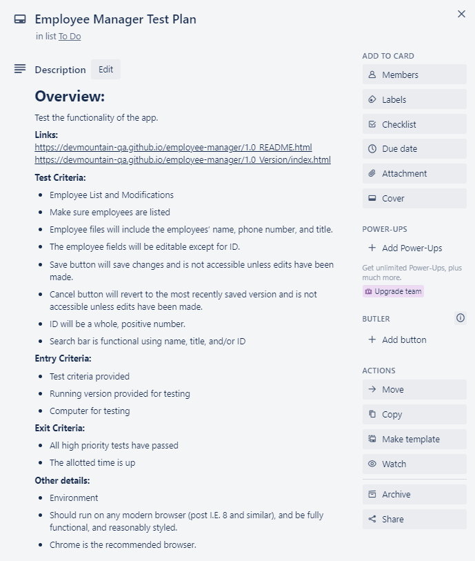
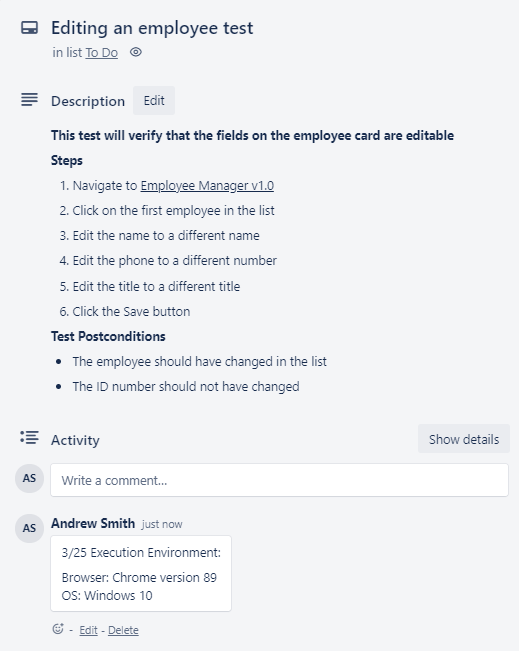
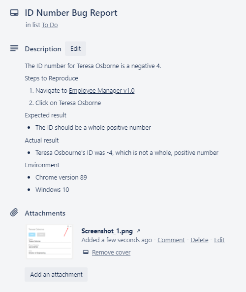

QA Fundamentals Project
Introduction
Description
Over the next few days, you’ll be working on the QA Fundamentals Project as preparation for your Capstone Project. This project will include manual tests and automated tests.
Summary
First, you’ll need to set up the project you’ll be testing (it might look familiar – it’s an upgraded version of a demo from Foundations) and get it running. Then you’ll do some exploration and figure out what you want to test. You’ll make a test plan and carry out your manual tests. After manual testing, you’ll create automated tests. Last, you get to choose what other topics you might want to practice with.
Setup
Summary
In this section, you’ll be downloading and setting up the app that you’ll be testing.
Steps
Download the lab exercise materials for this exercise from Frodo.
cdto the folder you just downloaded and into the nine-nine folder.Run
npm installto get the needed dependencies.Run
npm startto spin up the app. This will open the correct port (4000) in your browser and start the server. This server serves static files and can handle HTTP requests. Feel free to review the files if you’d like.
Exploratory Testing
Summary
Take some time to explore the app and find your selectors. We’ll use this time to prep for both manual and automation tests.
App Overview
This is an app that can hold character information. Users should be able to view all characters or one character at a time. Characters can be deleted from the list. Users should also be able to add characters. When adding a character, only 3 “likes” will be saved. Using the form on the left, users can get back characters over a certain age.
Steps
In your lab folder, create a file for notes.
As you explore the app, take note of things you notice. Try to find some user flows. Formulate ideas of what you want to test.
As you’re figuring out your tests, also take note of what selectors you might use to get the UI elements for automation later.
Test Plan
Summary
This section will be for planning out your tests.
Steps
Create a Trello board (or similar) for this app.
Review this Test Plan:

Create a similar test plan for the Nine-Nine app. Make sure you have the appropriate criteria.
Create test cases for each test that you will run (plan at least 5 tests). You can see an example below:

Manual Testing
Summary
In this section, you’ll complete the tests that you’ve outlined in your plan.
Steps
Follow the steps that you’ve written for yourself to complete each of your test cases.
Take notes on the details of your testing environment and what happened.
If you find any bugs (there are a few known bugs), make sure to document them. You can see an example bug report below:

Automation
Summary
Now let’s automate some tests!
Steps
In the nine-nine directory, install the packages needed to run automated tests. (If you can’t remember, look back at a previous project.)
Create your test file(s).
Automate each of your manual tests.
Run your tests with
npm run test. (Notice in package.json that thetestscript has been set to runjest.)
Going Further
More Testing
You have completed the core of this lab! Now, do some exploration with the app you have been given. You can dive deeper into any of the topics that have already been covered, or bring in ideas from other labs (unit tests, page objects, extending pages, API testing, etc.). If you have the time, choose a few different topics, not just one.
Questions
Answer the questions below in the file where you kept your exploratory notes.
What is the primary purpose for quality assurance?
How can using acceptance criteria improve the overall quality of an application?
Why is planning such an important part of the testing process?
Why is it important to have clear steps to reproduce a bug included in a bug report?
When you are done, upload all your work to GitHub.